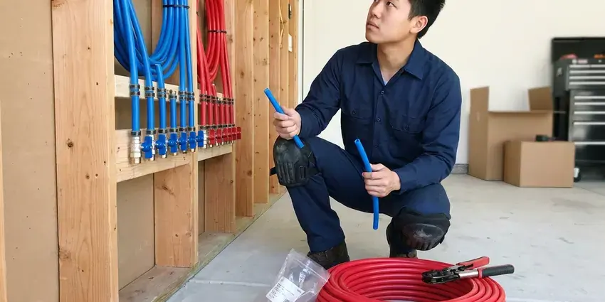

Sewage Ejector Pump Installation in Waukee, IA
Facing drainage issues in your Waukee basement? KFR Plumbing provides professional sewage ejector pump installation throughout Iowa.
- Quick, Reliable Installation
- Licensed Iowa Plumbers
- Licensed Sewer and Drain Pros
- Code Approved Work
Make That Below-Grade Bathroom Possible in Waukee, IA.
Our team is ready to provide efficient and reliable plumbing solutions for your home.
Expert Sewage Ejector and Grinder Pump Installation in Waukee, IA
KFR Plumbing installs sewage ejector pumps for any fixture that sits lower than your main sewer or septic line. We set a sealed basin below the floor, install a pump rated for solids, add a check valve and gate valve, and vent the basin through the roof. Every system is tested with water before we leave.
Our expertise includes:
- Check valves, full-port shutoffs and high water alarms included
- Proper sizing and wiring for new units.
- Confirming proper pit sizing and venting for new installations.

Additional Plumbing Installation Services in Waukee, IA
We install water heaters, pumps, lines, and fixtures across Waukee, IA with precision workmanship that meets every local code.


Customers
Why Choose KFR Plumbing for Sewage Ejector Pump Installation in Waukee, IA?
We understand the challenges of installing pumps in Iowa homes, from foundation types to soil conditions. Basements are standard in most Iowa homes, so sump pumps, floor drains, and wall seepage are common service concerns. We plan for those factors to deliver a durable and compliant setup every time.
- Code Compliance, All installations strictly follow Iowa plumbing codes and local Waukee regulations for safe and effective operation.
- Alarm Protection, High water alarms warn you before a failure causes a backup.
- Local Expertise, We understand Iowa building codes and soil conditions, delivering a compliant and durable installation.
Citywide Coverage
From historic districts to the newest developments, our technicians are familiar with the varied housing stock in Waukee and can efficiently install a sewage ejector pump tailored to your home's layout.
Experienced Team
Our plumbers install and service ejector pumps often and know how each brand handles solids and cycling. That experience leads to cleaner installs and fewer service calls.
Safety-First Approach
Sewer gas contains hydrogen sulfide and methane, so every basin we install is sealed and vented through the roof as code requires. We never use air admittance valves on ejector basins where they are not permitted.
Trusted Certified Waukee Plumbing Services Professionals
At KFR Plumbing, we take pride in providing certified plumbing services throughout Waukee, IA. Backed by recognized industry credentials, our experienced plumbers combine technical skill with genuine customer care. Whether it is repair, installation, or maintenance, we follow strict safety and quality standards to deliver long-lasting results you can trust.
Call Us Now PHCC Plumbing Contractor Recognition
PHCC Plumbing Contractor Recognition Better Business Bureau (BBB) Accreditation
Better Business Bureau (BBB) Accreditation Angi Certified Pro
Angi Certified Pro ISO 9001 Quality Management Certification
ISO 9001 Quality Management CertificationDependable Sewage Ejector Pump Installation Services in Waukee, IA
Ejector Pump Replacement in Waukee
Ejector pumps typically last about 7 to 10 years, depending on use and what goes down the drains. Signs of trouble include constant running, frequent cycling, odors and slow fixture drainage. We remove the failed pump, inspect the basin, check valve and float, and install a new pump from brands like Zoeller, Liberty Pumps or Wayne. The system is tested with water before we finish.

Sump Pump vs. Sewage Ejector Pump Installation in Waukee
While both sump pumps and sewage ejector pumps remove water, their applications are different. KFR Plumbing provides expert guidance and installation for both in Waukee. A sump pump handles groundwater and storm runoff, typically at a basement's lowest point to prevent flooding. A sewage ejector pump, however, is designed for wastewater containing solids from toilets, sinks and showers in below-grade plumbing. We make sure you get the correct pump for your drainage needs, preventing costly mistakes.
Emergency Ejector Pump Replacement in Waukee, IA
If your existing sewage ejector pump in Waukee, IA suddenly fails, it can lead to immediate and messy backups. KFR Plumbing offers emergency ejector pump replacement to restore your plumbing system quickly. Signs of failure include unusual noises, constant running or no operation at all. Our team can rapidly diagnose the issue and, if replacement is necessary, install a new, reliable unit to prevent further damage and get your below-grade plumbing back in service as soon as possible.
Zoeller Sewage Ejector Pump Installation in Waukee
As a trusted brand in the industry, Zoeller pumps are known for their reliability and long lifespan. KFR Plumbing installs a full range of Zoeller sewage ejector pumps in Waukee, from residential models to more powerful commercial units. Our technicians are very familiar with Zoeller's specifications, ensuring correct sizing, proper wiring and a well-planned discharge line for efficiency and longevity. Investing in a quality brand like Zoeller, installed by professionals, means fewer worries about wastewater removal.
Commercial Sewage Ejector Pump Installation in Waukee, IA
For businesses in Waukee, IA with below-grade plumbing needs, KFR Plumbing provides commercial-grade sewage ejector pump installation. Commercial applications often require more powerful pumps and larger basins to handle higher volumes of wastewater and solids. We assess your business's specific requirements, from restaurants with grease traps to office buildings with multiple restrooms. Our installations are designed for heavy-duty use and compliance with commercial plumbing codes, minimizing downtime for your operation.
Sewage Ejector Pump Basin Installation in Waukee, IA
The basin is a key component of any sewage ejector pump system. KFR Plumbing provides professional sewage ejector pump basin installation in Waukee, IA, making sure it is properly sealed, vented and sized for your pump. An incorrectly installed or undersized basin can lead to frequent pump cycling, premature wear and even overflows. We use durable, corrosion-resistant basins and make sure all connections are watertight and gas-tight to prevent odors and health hazards in your home or business.
Liberty Pumps Sewage Ejector Pump Installation in Waukee, IA
Liberty Pumps offers well-designed features and robust construction, making it another excellent choice for sewage ejector pump installation in Waukee, IA. KFR Plumbing provides professional installation of Liberty's product line, including its Omnivore series and grinder pump options for tougher applications. We make sure your Liberty pump ties cleanly into your existing plumbing system, with correct discharge piping and venting to meet local codes. Trust us to deliver a high-performance system that reliably handles your wastewater.

Zoeller Ejector Pump Installation in Waukee, IA
When you need a dependable Zoeller ejector pump installed in Waukee, IA, KFR Plumbing is your go-to plumbing expert. Zoeller pumps are known for their durability and efficiency, making them a popular choice for homeowners and businesses alike. Our team handles the complete installation of Zoeller sewage ejector pumps, including pit setup, discharge piping and electrical connections. We make sure your Zoeller pump operates quietly and effectively, giving you peace of mind for your below-grade plumbing.
Sewage Ejector Pump Installation Near Me in Waukee, IA
When you search for 'sewage ejector pump installation near me' in Waukee, IA, KFR Plumbing is your reliable local choice. We take pride in quick response times and expert service right in your neighborhood. Our technicians are familiar with the common plumbing challenges in this area.
Looking for 'sewage ejector pump installation near me' in Waukee, IA? KFR Plumbing is your local plumbing expert, ready to serve your neighborhood. We dispatch licensed plumbers promptly to assess your needs and provide efficient installation.
KFR Plumbing at a Glance
- Licensed and insured plumbers serving Waukee, IA
- Same-day appointments and 24/7 emergency response
- Upfront, flat-rate pricing before work begins
- 4.8-star rated by 620+ Iowa customers
Waukee Map
Waukee Information
- Population
- 31,645
- Area codes
- Local
- Service area
- Waukee and communities within 40 miles
- Nearby
- West Des Moines, Urbandale, Des Moines, Ankeny
Hillside lots, walkout basements and lower-level suites frequently sit below the main sewer line, making a properly sealed and vented sewage ejector the only way to drain those fixtures.
Expert Services
Trust our professionals for reliable KFR Plumbing solutions in Waukee, IA.
Our Specialized Plumbing Services in Waukee, IA
At KFR Plumbing, we provide a complete range of plumbing services across Waukee, IA. From leak detection to full system installations, our team ensures fast, precise, and affordable service for both residential and commercial properties. Explore our core services below:


How Our Sewage Ejector Pump Installation Process Works in Waukee, IA
Our systematic approach makes sure your new sewage ejector pump is installed correctly and works properly from day one.
Request a Quote
Call (515) 308-3583 or fill out our online form to schedule an appointment. We will discuss your needs and provide a clear, upfront estimate for your sewage ejector pump installation project.
Site Assessment
Our licensed plumber will visit your Waukee home to evaluate the installation site, determine the right pump type and size and plan for proper piping and electrical connections.
Professional Installation
We handle the complete installation, including excavation for the basin, setting the pump, connecting discharge lines, installing check and gate valves and confirming all electrical work meets code.
Frequently Asked Questions About Sewage Ejector Pump Installation in Waukee
Replacing a pump in an existing basin typically costs $900 to $2,000. A new ejector system with basin, venting and floor work typically ranges from $2,500 to $6,000 or more.
Manufacturer warranties typically range from 1 to 5 years depending on the model. We also warranty our installation labor.
Yes, in most cases a plumbing permit from the City of Waukee is required for sewage ejector pump installation. This ensures the work complies with local building and plumbing codes. KFR Plumbing will assist you with securing the necessary permits and make sure all work passes inspection.
We install Zoeller, Liberty Pumps and Wayne ejector pumps, plus Saniflo macerating systems. We choose the brand and model according to your fixtures and lift height.
A well-maintained sewage ejector pump typically has a lifespan of 7 to 10 years, though some higher-quality units can last longer. Factors like frequency of use, quality of installation and the type of waste being pumped can affect its longevity. Regular maintenance can help lengthen its operating life.
Most ejector pumps last 7 to 10 years with normal use. Flushing wipes or other non-flushable items can shorten that life significantly.
With proper installation and regular maintenance, a high-quality sewage ejector pump can last 7 to 15 years. Factors such as usage frequency, the type of waste it handles and water quality can affect its lifespan. Annual inspections can help maximize its longevity.
Common signs that you might need a new sewage ejector pump include the pump running constantly, not turning on at all, making unusual grinding or loud noises, or foul odors or sewage backing up into your basement fixtures. These symptoms point to a failing unit that needs immediate attention.
What People Are Saying About Our Plumbing Experts?

Laura S.
I scheduled a water heater replacement, and the team made the process smooth and affordable. The new unit works perfectly, and they cleaned up after completing the job.
Water Heater Replacement · Ames, IASofia M.
Two new toilets installed in one visit, no mess left behind, and the tech even adjusted a faucet he noticed was dripping. Fair pricing and really friendly.
Toilet Installation · Cedar Falls, IA
Mark T.
When our office needed drain cleaning, KFR Plumbing provided quick, reliable service. The plumber arrived on time and made sure every drain flowed perfectly before leaving. Very satisfied.
Drain Cleaning · Ames, IA
Robert G.
The trenchless sewer replacement saved our front yard. They walked us through the camera inspection footage first so we knew exactly what we were paying for.
Sewer Line Replacement · Waukee, IA
Emily R.
I called KFR Plumbing for plumbing repair, and the technician was fast, polite, and thorough. They explained the problem clearly and fixed it the same day. I will definitely hire them again. Highly recommended!
Plumbing Repair · Urbandale, IAJames P.
Our commercial plumbing system had a leak under the sink, and KFR Plumbing handled it professionally. The plumbers arrived quickly and restored everything without disruption to our customers.
Commercial Plumbing · Des Moines, IA